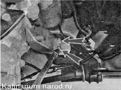
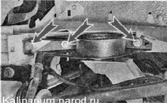
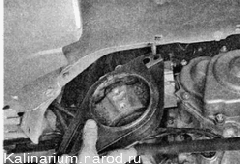
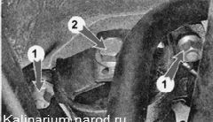
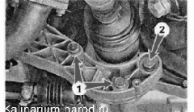

Опоры силового агрегата - заменаДля выполнения работы потребуются: — регулируемая по высоте подставка (например, винтовой домкрат); — смотровая канава или эстакада. ЛЕВАЯ ОПОРА Снятие 1. Подготавливаем автомобиль к выполнению работы. 2. Снимаем брызговик двигателя или защиту картера (если установлена). 3. Устанавливаем под коробку передач регулируемый по высоте упор (домкрат) и немного приподнимаем коробку, разгружая левую опору. 4. Ключом TORX Е14 с удлинителем отворачиваем два болта крепления опоры к кронштейну.  5. Торцовым ключом на 17 мм отворачиваем болт и две гайки крепления опоры к кузову. 
6. Снимаем опору со шпилек. 7. При необходимости торцовым ключом на 13 мм отворачиваем два винта крепления подушки опоры к кронштейну кузова. Установка Устанавливаем новую опору в обратной последовательности. Правую опору заменяем аналогично левой опоре (см. выше). ЗАДНЯЯ ОПОРА 1. Подготавливаем автомобиль к выполнению работы. 2. Устанавливаем регулируемую по высоте подставку (домкрат) под картер коробки передач. 3. Торцовым ключом на 17 мм отворачиваем две гайки крепления опоры к кузову 1. На подставке опускаем на 10—15 мм заднюю часть силового агрегата. Ключом на 19 мм отворачиваем болт 2 крепления опоры к кронштейну. 
4. При необходимости снимаем защитный экран и отворачиваем три болта крепления кронштейна опоры к картеру коробки передач: два болта 1 ключом на 17 мм и один болт 2 ключом на 19 мм. 5. Снимаем кронштейн. Установка Устанавливаем заднюю опору в обратной последовательности |